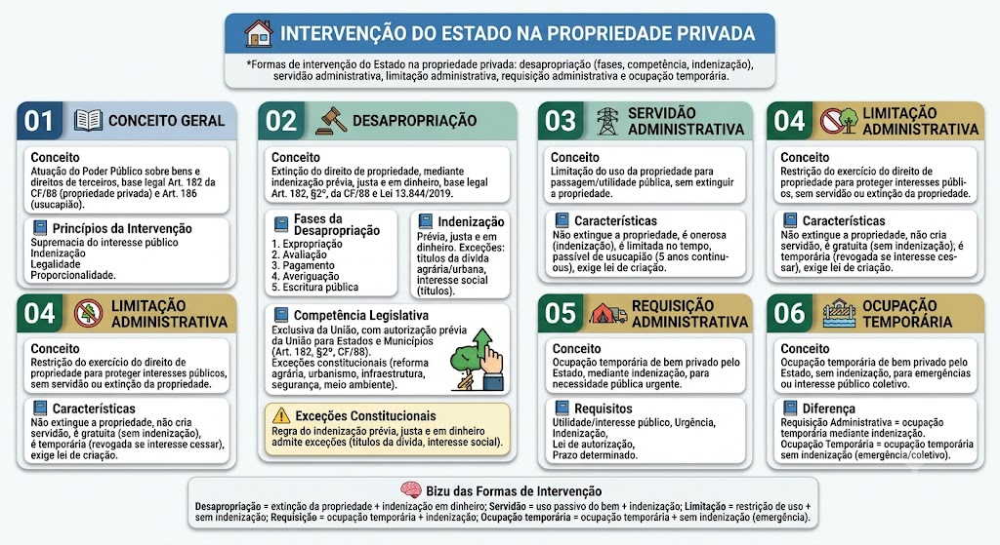

CORREÇÃO E ATUALIZAÇÃO
Intervenção na propriedade: desapropriação e medidas
A União tem competência legislativa privativa sobre desapropriação (CF, art. 22, II), mas União, Estados, DF e Municípios podem desapropriar nos termos legais. O Decreto-Lei 3.365/1941 prevê declaração de utilidade pública e disciplina o procedimento; a regra geral é indenização justa, prévia e em dinheiro, com exceções constitucionais específicas, como reforma agrária e política urbana — “interesse coletivo” por si só não cria exceção. Requisição administrativa cabe diante de iminente perigo público e assegura indenização ulterior se houver dano (CF, art. 5º, XXV). Servidão administrativa e limitação não geram indenização automática: ela depende de dano ou prejuízo indenizável. A ocupação temporária prevista no art. 36 do Decreto-Lei 3.365/1941 recai sobre terrenos não edificados vizinhos à obra e prevê indenização ao final.
Fonte oficial: consultar legislação e entendimento aplicável
Intervenção na Propriedade Privada
Intervenção na Propriedade Privada
A intervenção do Estado na propriedade privada é a atuação do Poder Público sobre bens e direitos de terceiros, com base na supremacia do interesse público. Diferente da propriedade pública, a propriedade privada é inviolável, podendo sofrer apenas as formas de intervenção previstas em lei.
Base legal: Art. 182 da CF/88 (propriedade privada) e Art. 186 (usucapião). A intervenção é sempre mediante indenização, salvo exceções constitucionais.
Princípios da Intervenção
O que é Desapropriação?
O que é Desapropriação?
É a extinção do direito de propriedade do particulado em favor do Estado, mediante indenização prévia, justa e em dinheiro. A desapropriação é a forma mais grave de intervenção na propriedade privada, pois afeta o direito de propriedade de forma definitiva.
Base legal: Art. 182, §2º, da CF/88 e Lei 13.844/2019 (Lei Geral de Desapropriação).
Fases da Desapropriação
Competência Legislatativa
Competência Legislatativa
A competência para desapropiar é da União, em todos os casos. Os Estados e Municípios só podem desapropiar mediante autorização da União (Art. 182, §2º, CF/88).
Exceções: A União pode desapropiar diretamente para:
- Reforma agrária (Art. 183, §2º, CF);
- Urbanismo (Art. 185, §2º, CF);
- Expansão de vias e transporte (Art. 182, §2º, CF);
- Segurança nacional (Art. 182, §2º, CF);
- Conservação do meio ambiente (Art. 182, §2º, CF);
- Títulos da dívida pública em reforma agrária ou urbana (exceção à regra do pagamento em dinheiro).
Indenização
Indenização
Princípio: A indenização deve ser prévia, justa e em dinheiro (Art. 182, §2º, CF).
Valor: Corresponde ao valor de mercado do bem, atualizado monetariamente até o momento do pagamento.
Exceções ao pagamento em dinheiro:
- Reforma agrária — pode ser pago em títulos da dívida pública;
- Urbanismo — pode ser pago em títulos ou em obras de interesse coletivo;
- Projeto de interesse social — pode ser pago em títulos da dívida pública.
⚠️ Exceções Constitucionais
⚠️ Exceções Constitucionais
A regra do indenização prévia, justa e em dinheiro admite exceções para:
1. Títulos da dívida pública — em reforma agrária ou urbana;
2. Obras de interesse coletivo — em urbanismo;
3. Projeto de interesse social — em reforma agrária;
4. Adquisição de imóvel para construção de infraestrutura — pode ser pago em títulos.
O que é?
O que é?
É a limitação do uso da propriedade privada para passagem, serviço ou utilidade pública, sem extinguir a propriedade. O proprietário continua sendo dono do bem, mas deve permitir o uso público em determinada área.
Exemplo: Passagem de cabeceio de estrada, dutos de energia, linhas de transmissão.
Características
O que é?
É a restrição do exercício do direito de propriedade para proteger interesses públicos específicos, sem criar servidão nem extinguir a propriedade. O proprietário pode continuar usando o bem, mas com restrições.
Exemplo: Zona de proteção ambiental, área de risco, corredores ecológicos.
O que é?
É a ocupação temporária de bem privado pelo Estado, mediante indenização, para atender a necessidade pública urgente. Diferente da desapropriação, a requisição não extingue a propriedade — é apenas uma ocupação temporária.
Exemplo: Ocupação de imóvel para construção de obra pública, requisição de terreno para posto de saúde temporário.
Requisitos
O que é?
É a ocupação temporária de bem privado pelo Estado, sem indenização, para atender a situações de emergência ou interesse público coletivo. Diferente da requisição, a ocupação temporária não exige indenização em alguns casos.
Exemplo: Ocupação de imóvel para construção de obra de emergência, ocupação de área para contenção de enchente.
Diferença entre Requisição e Ocupação Temporária
Diferença entre Requisição e Ocupação Temporária
Requisição Administrativa: ocupação temporária mediante indenização. Ocupação Temporária: ocupação temporária sem indenização (em casos de emergência ou interesse público coletivo).
🧠 Bizu das Formas de Intervenção
🧠 Bizu das Formas de Intervenção
Desapropriação = extinção da propriedade + indenização em dinheiro.
Servidão = uso passivo do bem + indenização.
Limitação = restrição de uso + sem indenização.
Requisição = ocupação temporária + indenização.
Ocupação temporária = ocupação temporária + sem indenização (em casos de emergência).
Mapa-mental
Material de estudo: Intervenção do Estado na Propriedade Privada
Material complementar · Ver fonte no GitHub
Conceito Geral
Princípios da Intervenção
- Supremacia do interesse público — o bem coletivo prevalece sobre o individual.
- Indenização — o proprietário deve ser compensado pelo prejuízo.
- Legalidade — a intervenção só pode ocorrer com base em lei.
- Proporcionalidade — a intervenção deve ser proporcional ao interesse público.
Desapropriação
Fases da Desapropriação
- 1. Expropriação (ato estatal): O Estado declara a utilidade pública e determina a desapropriação.
- 2. Indiva (avaliação): O Estado fixa o valor da indenização por meio de perícia judicial ou administrativa.
- 3. Pagamento: O Estado paga a indenização ao proprietário.
- 4. Averiguação: O Estado verifica a efetividade do pagamento.
- 5. Escritura pública: Formalização da transferência da propriedade para o Estado.
Servidão Administrativa
Características
- Não extingue a propriedade — o proprietário continua dono do bem.
- É onerosa — o Estado paga indenização por uso.
- É limitada no tempo — pode ser temporária ou definitiva.
- É passível de usucapião — se o uso for contínuo e ininterrupto por 5 anos (Art. 187, CC).
- Exige lei de criação — a servidão só pode ser criada por lei.
Limitação Administrativa
Características
- Não extingue a propriedade — o proprietário continua dono.
- Não cria servidão — não há passagem ou uso específico.
- É gratuita — o Estado não paga indenização.
- É temporária — pode ser revogada quando o interesse público cessar.
- Exige lei de criação — a limitação só pode ser criada por lei.
Requisição Administrativa
Requisitos
- Utilidade pública ou interesse público — justifica a requisição.
- Urgência — a ocupação é temporária e urgente.
- Indenização — o proprietário deve ser compensado.
- Lei de autorização — exige base legal específica.
- Prazo determinado — a ocupação tem duração limitada.
Ocupação Temporária
Mapa-mental
